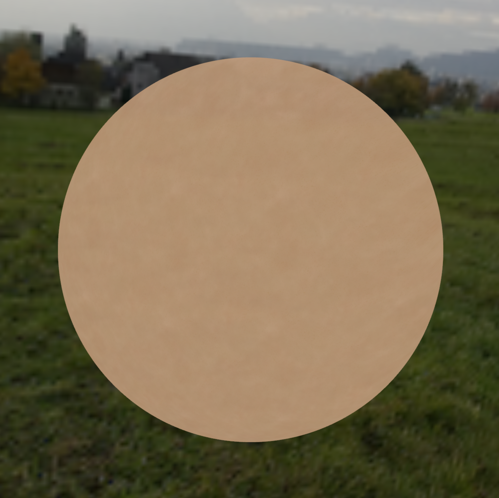
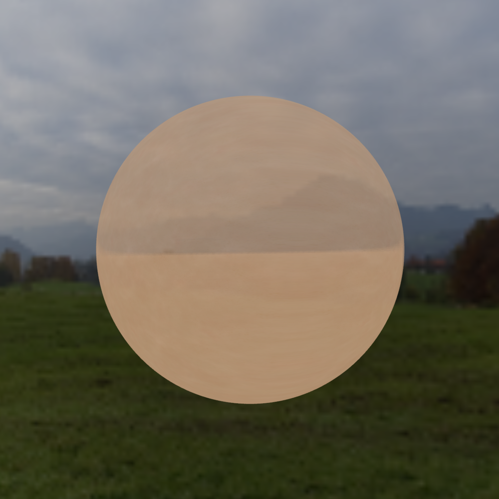
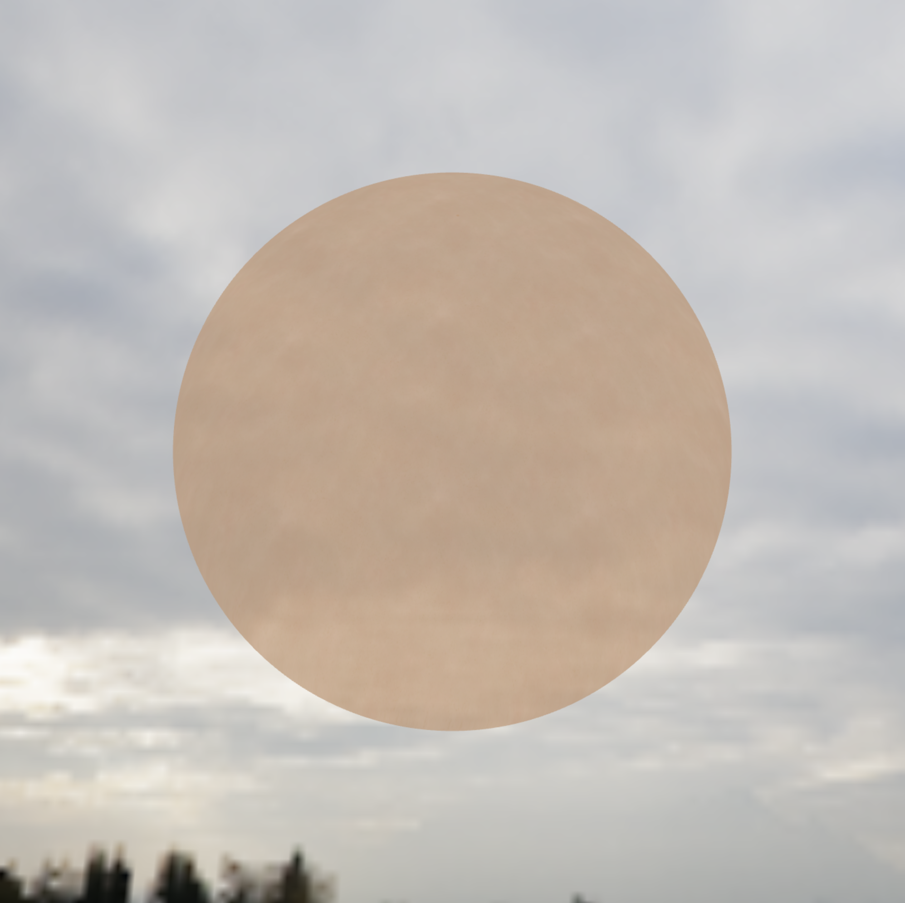
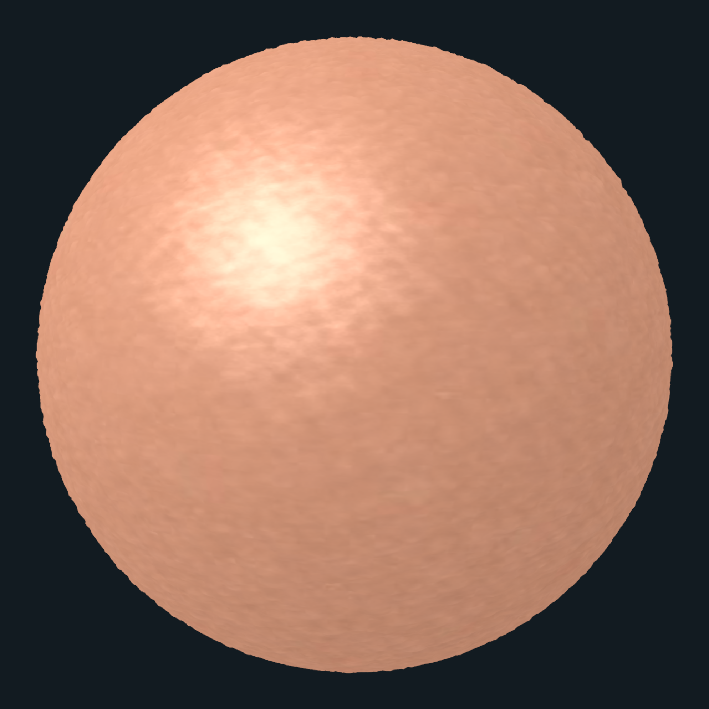
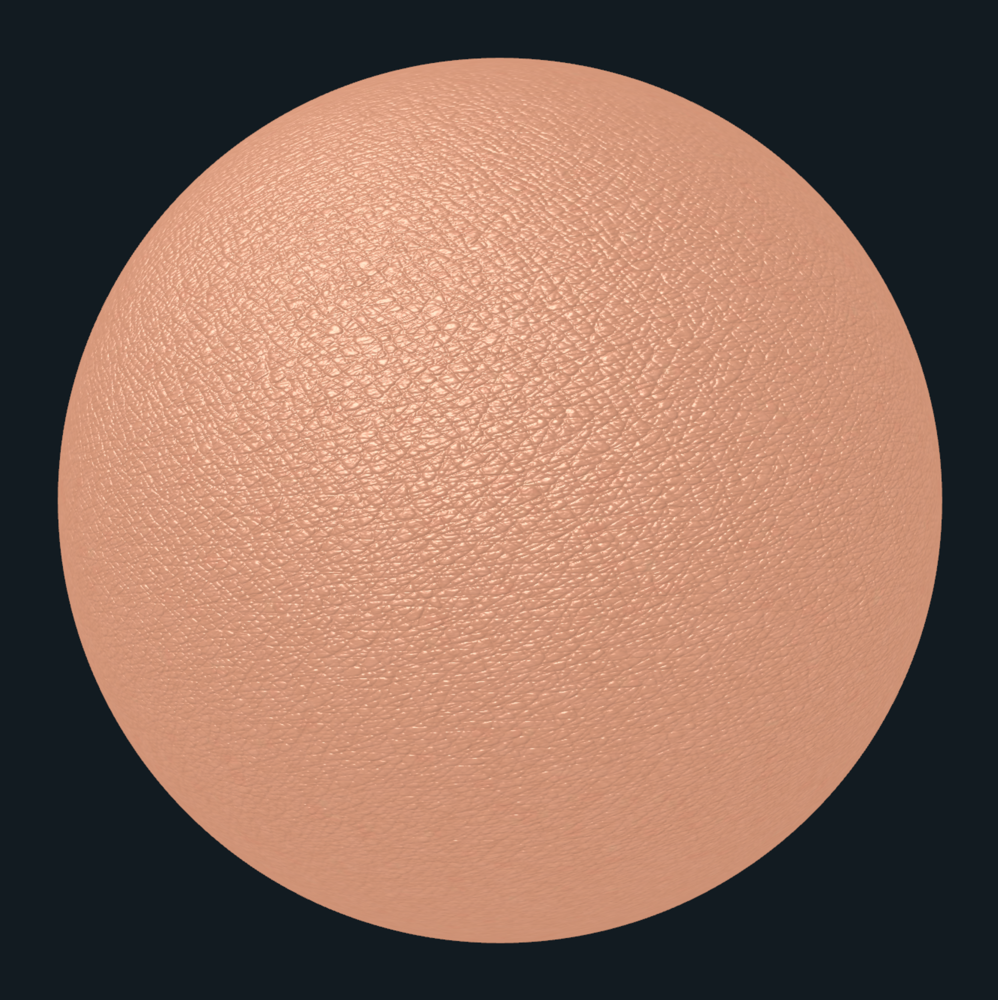

CS 457/557 - Computer Graphics Shaders
C / C++ / OpenGL / GLSL
Here are all my projects from CS 457 - Computer Graphics Shaders with Dr. Mike Bailey. I learned about different shader types (vertex, tessellation, geometry, fragment, compute) and implemented various shader tricks in C++ with OpenGL and GLSL.
Check out the GitHub repository here!


In celebration of the Year of the Dragon, everyone got to implement whatever shader they wanted on a dragon OBJ. I made a chromatic aberration shader that gives the dragon a diamondesque look.

Attempt #1 - Sampling Cube Maps and a Skin Texture
I tried to follow along with Curtis Beeson and Kevin Bjorke's documentation of their Skin in the "Dawn" demo from Chapter 3 of GPU Gems but ended up with a translucent skin bubble that attempts to simulate diffuse reflection and specular highlights 😔. I think it is a start at recreating light passing through skin at the very least.



Attempt #2 - Texture and Displacement Mapping with a Height Map Under Per-Fragment Lighting

Attempt #3 - Texture and Normal Mapping
